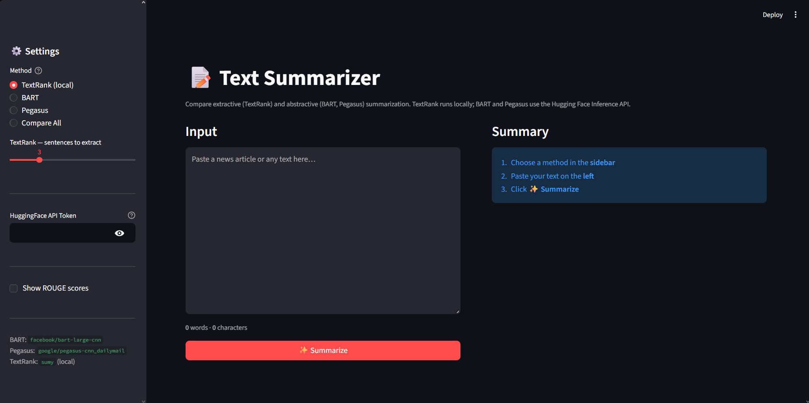
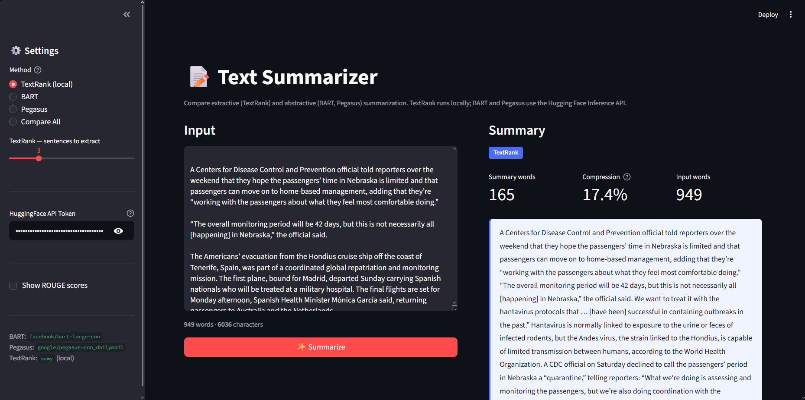
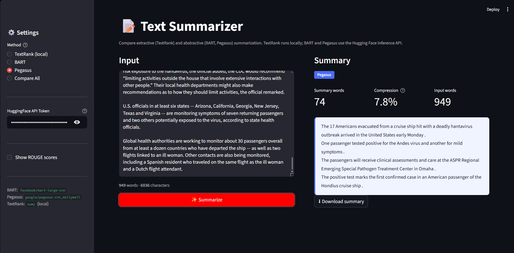

Automatic Text Summarization
Extractive and abstractive NLP models that condense long documents into concise summaries - with a side-by-side comparison of the two approaches.



← scroll to see more →
Overview
This project explores automatic text summarization of news articles using both extractive and abstractive techniques. Articles from the CNN/DailyMail dataset are summarized by three models: TextRank, BART, and PEGASUS, and evaluated against human-written reference summaries using ROUGE metrics. A Streamlit web app is also included, allowing users to paste any news article and receive an instant summary powered by PEGASUS.
Approach
Extractive
TextRank is a graph-based algorithm that ranks sentences by their similarity to one another, then selects the top-ranked sentences as the summary. No model training is required, it works purely on the structure of the input text. Implemented using the sumy library, TextRank extracts the 3 most important sentences from each article.
Abstractive
Unlike extractive methods, abstractive models generate new sentences that paraphrase and condense the source material. - BART (facebook/bart-large-cnn): a sequence-to-sequence transformer pre-trained on the CNN/DailyMail dataset, called via the Hugging Face Inference API. - PEGASUS (google/pegasus-cnn_dailymail): a transformer pre-trained with a gap-sentence generation objective specifically designed for summarization, also fine-tuned on CNN/DailyMail. Used in both the evaluation notebook and the Streamlit app. All articles were preprocessed by normalizing whitespace and truncating to a maximum length before being passed to each model.
Evaluation
- ROUGE-1, ROUGE-2, ROUGE-L
- CNN/DailyMail dataset